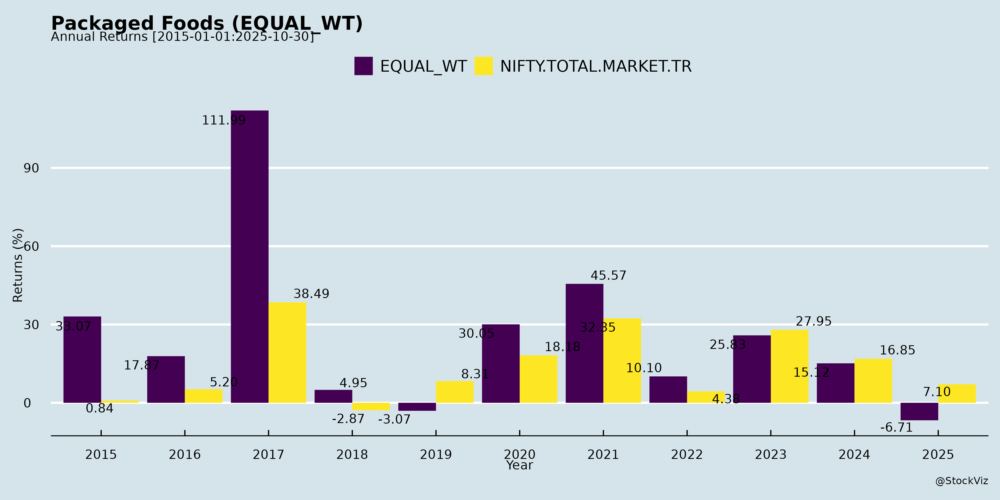
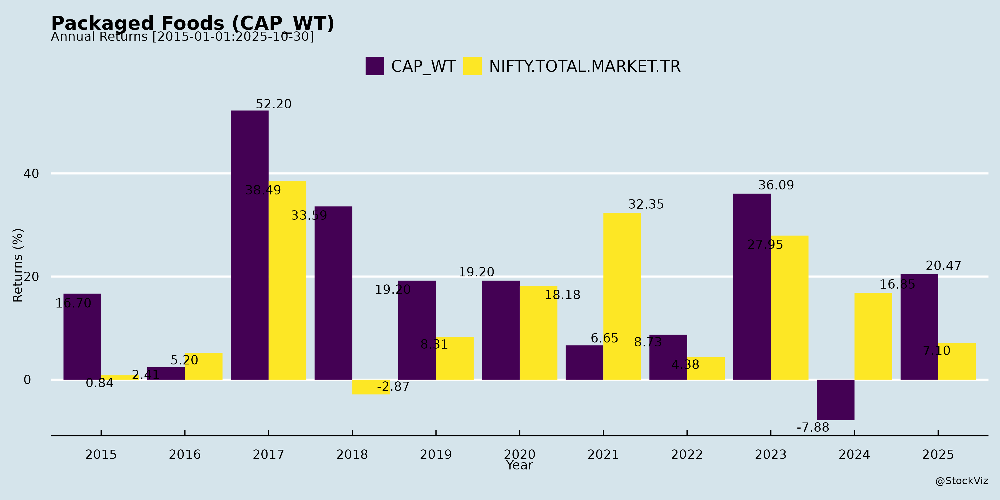
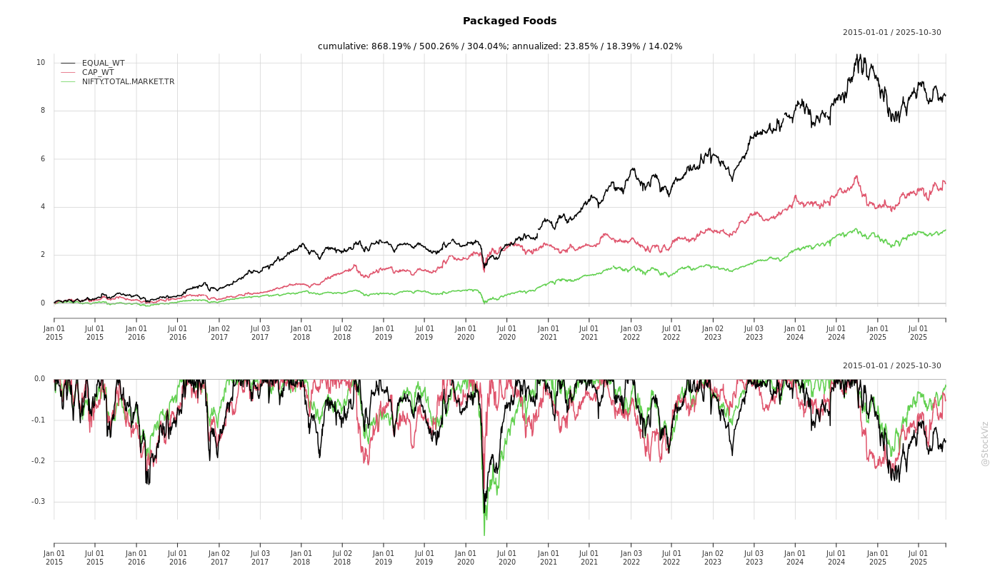
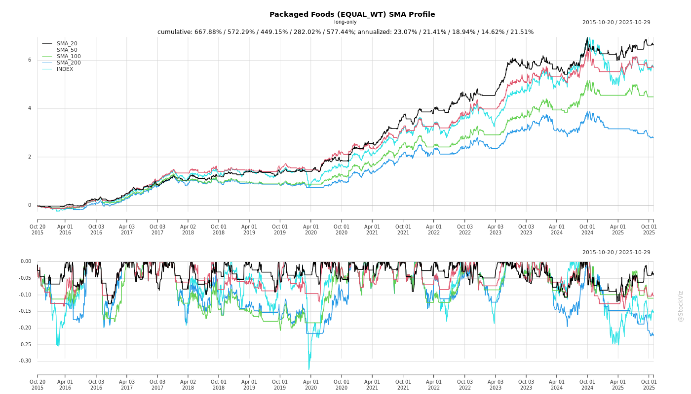
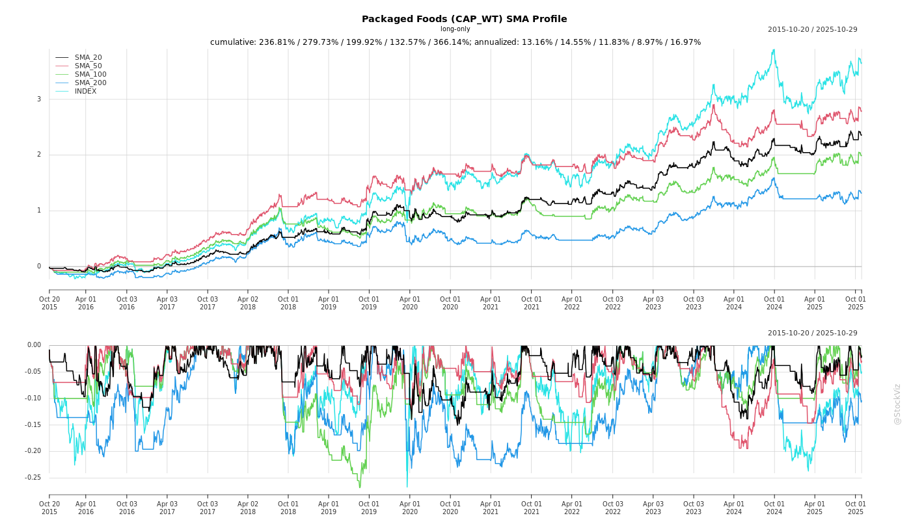
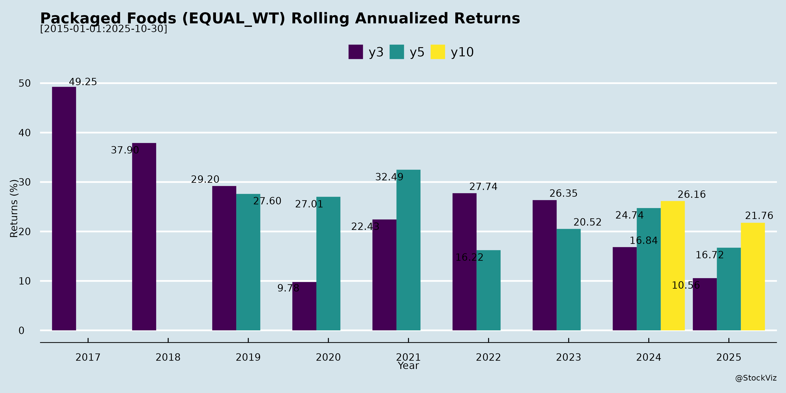

Packaged Foods
Industry Metrics
February 20, 2026
Annual Returns



Cumulative Returns and Drawdowns

SMA Scenarios


Current Distance from SMA
Rolling Returns


Market Cap
EBIT (% of Industry Total)
Revenue (% of Industry Total)
AI Summaries
Analyst
asof: 2025-11-29
Indian Packaged Foods Sector Analysis (Based on Q2/H1 FY26 Transcripts & Filings)
The sector exhibits resilience amid macroeconomic headwinds, with organized players (Nestlé, Britannia, Bikaji, ADF Foods, etc.) gaining from GST reforms and premiumization. Growth is volume-led post-GST, but challenged by inflation and competition. Key insights from Nestlé (strategic overview), Britannia/Bikaji (GST tailwinds), ADF/Foods & Inns (exports), Zydus/Nakoda (innovation/acquisitions), and others.
Tailwinds
- GST 2.0 Rationalization (5% Rate): Major boost for biscuits/snacks (85%+ portfolio for many); improves affordability, compliance, and shifts share to organized players (Britannia: +6-7% pricing via grammage hikes; Bikaji/Nestlé: high-teens growth expected Q3/Q4; unorganized loses edge).
- Commodity Stability/Declines: Benign trends in flour, palm oil, sugar (Britannia); Totapuri mango prices down (Foods & Inns), aiding competitiveness vs. Mexico.
- Channel Shifts: Quick commerce/e-commerce surge (Nestlé: 8.5% sales, 33% growth; ADF: Costco listings); rural/RUrban expansion (Nestlé: +200k villages).
- Government Support: Budget consumption push (₹1L Cr spend); PLI incentives (Nestlé/Bikaji).
- Consumer Trends: Premiumization (Nestlé: ₹7,500 Cr opportunity), health focus (millets, protein bars), out-of-home doubling by 2030.
Headwinds
- Demand Slowdown: Urban tepid (unemployment, wage stagnation); rural recovery slow despite rains (Nestlé/Britannia); seasonal disruptions (prolonged monsoons hit Glucon-D/Nycil - Zydus).
- Commodity Inflation: Coffee (+75% YoY), cocoa (+40-50%), wheat up (Nestlé); selective agri pressures.
- GST Transition Disruptions: Destocking/deferred purchases (Bikaji: 3-5% ethnic snacks hit; Britannia: 2-2.5% top-line loss).
- Competition/Channel Conflicts: Regional/unorganized aggressive (Nestlé Maggi); quick commerce discounting erodes GT (75-80% sales - Nestlé).
- External Pressures: US tariffs (ADF: absorbed but monitored); forex MTM losses (Foods & Inns: ₹5.5 Cr).
Growth Prospects
- Double-Digit Volume-Led Recovery: High-teens ethnic snacks (Bikaji), 9-15% overall (Nestlé/Britannia); H2 acceleration post-GST (Britannia: 15%+ top-line).
- Innovation & Premium: New launches (Nakoda energy drinks, Zydus millet bars, Nestlé Nespresso/PetCare); 6-10% sales from NPDs.
- Exports/International: Strong (ADF: Costco 75 stores; Foods & Inns: +39% frozen volumes; Bikaji: +77% H1).
- Capex & Capacity: Greenfield expansions (Nestlé Odisha, ADF Surat); PLI-driven (Foods & Inns spray-dried).
- Long-Term Targets: Nestlé: 11-15% CAGR sustained; Britannia: double-digits; ADF: ₹1,000 Cr by FY27; sector per capita uplift (3-4x peers like Philippines).
Key Risks
| Risk Category | Details | Mitigants |
|---|---|---|
| Commodity/Inflation | Volatility in coffee/cocoa/wheat; food inflation squeezes budgets. | Hedging, Project Shark efficiencies (Nestlé: 1-2% sales savings); cost-plus models (Foods & Inns). |
| Competition | Regional players in noodles/snacks; quick commerce discounting. | Premiumization, RUrban (Nestlé); GST compliance edge. |
| Demand/Macro | Urban slowdown, rural lag; monsoon disruptions. | Diversification (premium/health); govt. spending. |
| Regulatory/External | Tariffs (US/UK FTA delays - ADF); PLI delays; forex MTM. | Pass-through pricing; debt reduction (Nakoda). |
| Execution | New launches (Nakoda beverages); capacity ramp-up; channel balance. | Distribution expansion; innovation (2-6% NPD sales). |
Summary
Bullish Outlook: GST reforms catalyze organized share gains, enabling 10-15%+ volume growth in H2 FY26 (high-teens for snacks/beverages). Tailwinds from premiumization, digital channels, exports outweigh headwinds like inflation (mitigated by efficiencies). Prospects strong in diversified portfolios (health/FMCG/out-of-home), targeting ₹1,000 Cr+ revenues for mid-caps. Risk-Adjusted View: Moderate-high growth (12-15% sector CAGR) with volatility from commodities/competition; focus on organized players (Nestlé/Britannia margins 20%+). Monitor Q3 GST normalization for confirmation.
General
asof: 2025-12-03
Analysis of Indian Packaged Foods Sector (Based on Provided Filings)
The filings from companies like Nestlé India, Britannia, Bikaji Foods, Zydus Wellness, Gopal Snacks, Prataap Snacks, ADF Foods, Ganesh Consumer Products, Euro India Fresh Foods, Foods & Inns, Mrs. Bectors, and Bombay Burmah reveal a mix of operational expansions, governance updates, and regulatory challenges. Below is a structured summary of headwinds, tailwinds, growth prospects, and key risks for the sector.
Tailwinds (Positive Catalysts)
- Strong Governance & Investor Engagement: Routine disclosures (e.g., Nestlé’s investor meets, auditor re-appointments at Bombay Burmah & Euro India) signal robust compliance and transparency, boosting investor confidence.
- ESG Momentum: Britannia’s ‘77’ ESG rating from CFC Finlease highlights improving sustainability focus, aiding access to global capital.
- Government Incentives: Foods & Inns received ₹8.39 Cr total capital subsidy for cold chain infrastructure, supporting value addition and export competitiveness.
- Shareholder & Talent Retention: Initiatives like ADF Foods’ IEPF awareness campaign and Prataap Snacks’ ESAR allotments (26,587 shares) enhance liquidity and employee incentives.
Headwinds (Challenges)
- Regulatory Scrutiny & Delays: SEBI warning to Mrs. Bectors for delayed QIP monitoring report; routine compliance lapses could escalate to penalties.
- Supply Chain Disruptions: Gopal Snacks recovering from a prior fire incident, which hampered growth via fragmented production.
- Tax & Legal Pressures: Zydus Wellness faces ₹56.33 Cr GST demand (pre-acquisition, indemnified); adds short-term uncertainty despite appeals.
Growth Prospects
- Capacity Expansion & Regional Penetration: Gopal Snacks’ new Modasa facility (63,085 MT capacity for namkeen/gathiya) targets Gujarat, Rajasthan, MP, and Maharashtra, resolving supply chain issues and boosting order frequency/value.
- Infrastructure Boost: Cold chain subsidies (e.g., Foods & Inns) align with “Viksit Bharat” goals, enabling perishable product scaling.
- Market Listing & Capital Access: Ganesh Consumer’s CIN update to listed status facilitates deeper equity markets.
- Sector Tailwinds: Urbanization, rising convenience demand, and premiumization (snacks, beverages) support 10-15% CAGR; new facilities position players for volume growth.
Key Risks
| Risk Category | Details | Impacted Companies | Potential Sector Implication |
|---|---|---|---|
| Regulatory/Legal | PMLA summons (Bikaji: MD appearance required); GST orders (Zydus: ₹56 Cr demand); SEBI warnings (Bectors: disclosure delays). | Bikaji, Zydus, Bectors | Escalation to fines/probes; erodes investor trust; higher compliance costs. |
| Operational | Fire/supply disruptions; pre-acquisition liabilities. | Gopal, Zydus | Margin pressure; capacity underutilization. |
| Financial | Indemnified demands/tax litigations; subsidy dependencies. | Zydus, Foods & Inns | Cash flow volatility; contingent liabilities (~₹56 Cr+). |
| Governance | Auditor/CSR delays; KYC non-compliance. | Multiple | Stock volatility; delisting risks if unaddressed. |
Overall Outlook: Tailwinds from expansions and incentives outweigh near-term headwinds, with growth prospects strong (supply chain fixes, infra support). However, regulatory risks (PMLA/GST/SEBI) pose material threats—companies emphasize “no material impact,” but cumulative scrutiny could pressure valuations. Monitor Q3FY26 earnings for litigation updates. Sector remains resilient amid 8-10% India FMCG growth.
Investor
asof: 2025-11-29
Analysis of Indian Packaged Foods Sector (Based on Q2/H1 FY26 Earnings Transcripts & Presentations)
The Indian packaged foods sector (FMCG/snacks, beverages, nutrition, etc.) remains resilient amid macroeconomic challenges, with companies like Nestlé India, Britannia, Bikaji Foods, Zydus Wellness, Prataap Snacks (Yellow Diamond), ADF Foods, Foods & Inns, and others reporting mixed results. Revenue growth was muted (flat to low-single digit YoY for many) due to transitory factors, but profitability improved via cost controls, GST benefits, and mix shifts. Key insights from transcripts (Nov 2025) highlight a sector poised for recovery in H2 FY26, driven by structural tailwinds, though headwinds persist.
Headwinds (Challenges)
- Commodity Inflation & Cost Pressures: Sharp rises in key inputs—coffee (+75% YoY, Nestlé), cocoa (+40-50%), palm oil (+2-9% QoQ, Britannia/Prataap), wheat/edible oils. Forced pricing (Nestlé: pricing last resort post-efficiencies) and grammage tweaks, denting volumes (Nestlé: 9.5% historical volume CAGR now pressured).
- Demand Slowdown: Urban deceleration (Nestlé: tepid wages/unemployment), rural mixed but resilient (Britannia: rural > urban). Prolonged monsoons hurt seasonal items (Zydus: Glucon-D/Nycil; Britannia dairy). Food inflation squeezes budgets (“buying expensive, consuming less”—Nestlé).
- GST 2.0 Transition Disruptions: Rate cuts (12%→5% for snacks/ethnic) caused 2-2.5% revenue loss via de-stocking (Britannia/Bikaji/Prataap/Zydus). Short-term compliance shifts favored organized players long-term but hit Q2 pipelines.
- Intense Competition: Regional/unorganized players gaining in noodles (Nestlé MAGGI), biscuits/snacks (Britannia/Prataap/Bikaji). Channel discounting wars (quick commerce vs. GT).
- Execution/Weather Risks: Heavy rains (Britannia rural), tariffs (ADF Foods US exposure).
Tailwinds (Positives)
- GST Rationalization Benefits: Organized players gain from compliance edge (Britannia: market share shift; Bikaji: high-teens ethnic snacks growth expected). Affordability boost (Nestlé: premiumization universal).
- Policy Support: Budget consumption spend (INR 100k Cr, Nestlé), lower taxes/inflation moderation aiding mid-market (Nestlé/Prataap).
- Digital/Channel Shifts: Quick commerce boom (Nestlé: 8.5% rev, +33% growth; Prataap scaling to 5%). E-comm/D2C strong (Zydus RiteBite).
- Margin Levers: Efficiencies (Nestlé Project Shark: 1-2% sales savings), premiumization (Nestlé: 16% CAGR), automation (Prataap new Indore plant).
- Commodity Easing: Palm oil/Potato/Corn dips (Britannia/Prataap); Totapuri mango competitive (Foods & Inns).
Growth Prospects
- Large Underpenetrated Market: INR 508 Bn savoury snacks (Prataap); overall packaged foods 3-4x below peers (Nestlé). RUrban/volumes key (Nestlé: 5.3 Mn outlets, +5% YoY).
- Premium/Health/Out-of-Home: Premium +16% CAGR (Nestlé); nutrition/pet care/RTD (Zydus RiteBite/Comfort Click; ADF frozen). OOH doubles by 2030 (Nestlé).
- Innovation/Diversification: New categories (Nestlé NESPRESSO/pet; Nakoda energy drinks; Prataap pellets/namkeen). Exports strong (ADF: +12% standalone; Foods & Inns mango/tomato).
- Capacity/Expansion: Nestlé 10th factory; Prataap 16 facilities; ADF Surat greenfield. Distribution ramps (Bikaji: 3.5L outlets; Nestlé RUrban).
- H2 FY26 Outlook: Double-digit recovery (Britannia/Nestlé); 15-20% vol growth targeted (Foods & Inns).
Projected Metrics (Aggregated Guidance): | Metric | FY26 Outlook | |——–|————-| | Revenue Growth | Mid-teens (post-GST normalization) | | EBITDA Margin | 10-18% (margin focus; Nestlé 17-18%, Prataap >10%) | | Volume Growth | 15-20% (Nestlé penetration-led) |
Key Risks
- Prolonged Macro Weakness: Consumption slowdown persists (urban/rural split; inflation).
- Commodity Volatility: Coffee/cocoa/palm oil spikes erode margins (Nestlé exposure).
- Competition/Channel Shifts: Unorganized/quick commerce disrupts GT (Nestlé MAGGI/Britannia biscuits).
- Regulatory/External: US tariffs (ADF), PLI delays (Foods & Inns), weather/crop failures.
- Execution: New launches (Nakoda beverages; Prataap efficiency), acquisitions (Zydus Comfort Click integration).
- Forex/Debt: Currency fluctuations (ADF MTM losses); working capital cycles.
Summary
Bullish Long-Term: Sector benefits from underpenetration, GST tailwinds, premiumization/digital shift (15%+ CAGR potential). Organized players (Nestlé/Britannia) gaining share via scale/efficiencies; innovations (health/OOH) unlock adjacencies.
Near-Term Cautious: Q2 headwinds (GST/inflation) cap growth (flat YoY), but H2 rebound via demand recovery/margins (10-18% EBITDA). Risks tilted to macros/commodities, but resilient balance sheets (Nestlé ROE leader) mitigate.
Investment Thesis: Buy for volume-led recovery (RUrban/digital); watch H2 execution. Target: 12-15% sector EPS CAGR FY26-28. (Sources: Aggregated from 10+ transcripts; Nielsen data cited.)
Press Release
asof: 2025-11-29
Indian Packaged Foods Sector Analysis: Q2 & H1 FY26 Insights
The Indian Packaged Foods sector demonstrated resilient performance in Q2 & H1 FY26, with most listed players (Nestlé India, Bikaji Foods, Mrs. Bectors, Ganesh Consumer Products, etc.) reporting double-digit revenue growth (avg. 10-15% YoY), driven by volume-led expansion, festive demand, and channel diversification. EBITDA margins improved modestly (e.g., Nestlé at 22%, Bikaji at 15.4%), aided by cost optimizations, though pressured by input costs. Standalone PAT growth was strong (e.g., Nestlé +39% YoY in some metrics, ADF Foods +39%). Key themes include GST transition disruptions offset by reforms, e-commerce surge, and innovation. Below is a structured summary of headwinds, tailwinds, growth prospects, and key risks based on the filings.
Headwinds (Challenges Observed)
- GST Transition Disruptions: Widespread destocking in Sep’25 ahead of GST rate cuts (e.g., 18% to 5% for biscuits) led to short-term sales dips (Bikaji: salty snacks muted; Mrs. Bectors/Prataap: modest YoY decline; Gopal: supply chain issues).
- Input Cost Inflation: Rising raw material prices (palm oil custom duties - Gopal; milk/coffee/cocoa softening post-festive but volatile - Nestlé; edible oils firm - sector-wide).
- Demand Softness in Segments: Muted growth in Milk/Nutrition (Nestlé), Western Snacks de-growth (Bikaji -5.2%), seasonal weakness (Ganesh Sattu due to short summer).
- Operational Disruptions: Fire at facilities (Gopal), capacity constraints, and forex gains/losses (ADF Foods US tariffs uncertainty).
- Margin Pressure: Gross margins contracted in some (Mrs. Bectors 44.2% vs. 47.3%; Gopal EBITDA 6.4% vs. 11.6%), due to deleveraging and ad spends.
Tailwinds (Positive Catalysts)
- GST Rationalization (GST 2.0): Lower rates hailed as “game-changer” for affordability/consumption (Nestlé, Bikaji, Mrs. Bectors); expected festive/post-GST demand uptick already visible.
- Volume & Channel Growth: Strong underlying volumes (Nestlé 10-11%, Bikaji 10.8%); e-com/quick commerce surged 97% YoY (Ganesh), with OOH/modern trade acceleration (Nestlé, Mrs. Bectors).
- Festive & Rural Momentum: Double-digit domestic sales (Nestlé INR 54bn highest-ever Q); rural penetration via quick commerce/numeric expansion (Bikaji +3k outlets).
- Exports & Premiumization: High double-digit export growth (Nestlé, ADF); new launches (e.g., KitKat variants, Maggi innovations, healthy bars - Zydus).
- Cost Efficiencies: Margin expansion via mix optimization, sourcing, solar PPAs (Ganesh debt reduction post-IPO).
Growth Prospects
- Robust Topline Trajectory: Sector avg. 10-15% YoY revenue growth sustainable into H2FY26 via GST recovery, festive tailwinds, and 20-30% e-com contribution.
- Category Diversification: Beverages/pet food/OOH high-growth (Nestlé Pet Food/Purina; Nakoda “NO CTRL” launch); ethnic snacks/packaged sweets strong (Bikaji +32% sweets).
- Capacity & Distribution Expansion: New lines/facilities (Nestlé Sanand, ADF Surat); 850+ distributors (Gopal), pan-India reach (Prataap 27 states).
- Innovation & Premium Plays: Healthy/RTD variants, millet bars (Zydus), rural premiumization; acquisitions (Zydus Comfort Click for VMS).
- Macro Tailwinds: Improving consumption (stable inflation, flush milk season), exports to 25+ countries; leadership targets $5tn economy boost FMCG.
| Company Highlights (Q2 Revenue Growth YoY) | Growth Driver |
|---|---|
| Nestlé: +10.9% | Volumes, exports, confectionery/beverages |
| Bikaji: +15.2% | Sweets +32%, exports +77% |
| Mrs. Bectors: +11.1% | Bakery +16%, biscuits +10% |
| Ganesh: +7.2% | Spices +23%, B2C staples +15% (ex-Sattu) |
| ADF: +11.5% (standalone) | Ethnic foods, Costco listings |
Outlook: H2FY26 poised for 12-18% growth, with EBITDA margins stabilizing at 12-22%.
Key Risks
- Commodity Volatility: Milk softening post-festive but cocoa/oils firm; potential reflation (Nestlé outlook).
- Regulatory/Policy Shifts: GST implementation hiccups, US tariffs (ADF), custom duties (Gopal palm oil).
- Competition: Regional/unorganized players (Britannia levers), intense rivalry in snacks (Prataap softness in rings/chips).
- Demand/Macro Risks: Prolonged softness if rural recovery delays; forex/interest rate fluctuations.
- Execution Risks: Supply chain (fires, third-party reliance - Gopal), capex delays (new facilities).
- Financial: High ad spends/debt (some reduced post-IPO), exceptional items volatility (Nestlé divestitures).
Overall Verdict: Sector in recovery mode with GST reforms as pivotal tailwind; focus on volumes, innovation, and efficiency positions leaders (Nestlé, Bikaji) for outperformance. Investors should monitor H2 demand normalization and commodity trends. Positive EBITDA/PAT turnarounds (e.g., Nakoda, Gopal) signal broad-based resilience.
Copyright © 2023 SAS Data Analytics Pvt. Ltd. All rights reserved.